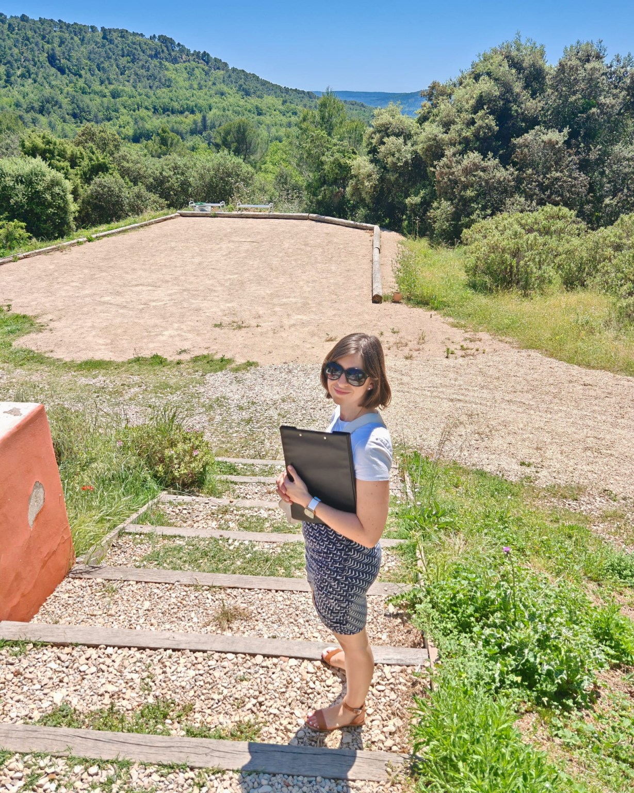
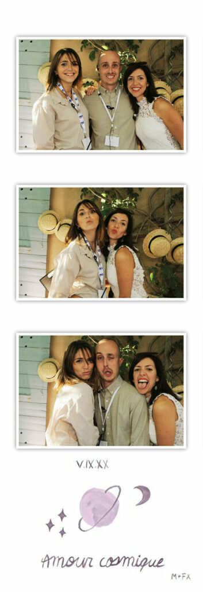
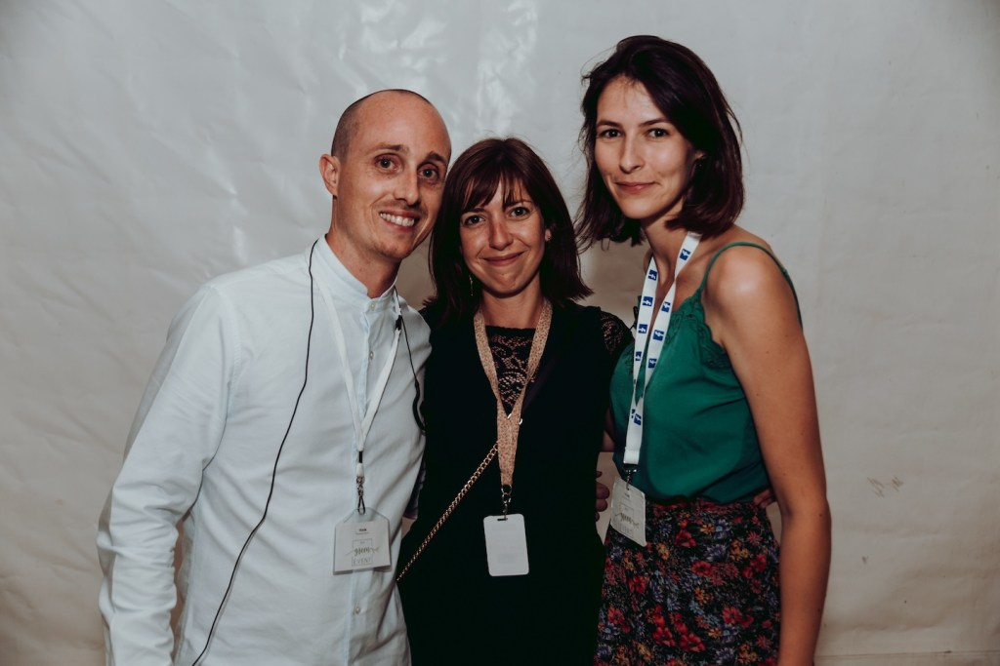

L’importance d’une organisation sans stress pour un mariage réussi
Le jour de votre mariage est un événement unique, et il est essentiel que tout se passe comme prévu. C’est là qu’intervient la wedding planner, ou coordinatrice de mariage, une professionnelle qui gère chaque aspect de l’événement pour garantir une journée sans stress. Si vous vous demandez pourquoi faire appel à une wedding planner, surtout pour la coordination du Jour J, cet article vous expliquera tous les avantages de cette aide précieuse. De plus, nous explorerons pourquoi une wedding planner peut être particulièrement utile pour les mariages éco-responsables.
1. Un mariage sans stress grâce à une organisation professionnelle
L’un des plus grands avantages de faire appel à une wedding planner pour la coordination du Jour J est la tranquillité d’esprit qu’elle procure. Le jour de votre mariage, vous ne voulez pas vous inquiéter des détails logistiques : la gestion des prestataires, le respect du timing, le flux des invités… Une wedding planner s’occupe de tout cela pour vous. Vous pourrez ainsi vous concentrer sur ce qui compte vraiment : profiter de chaque instant avec vos proches et célébrer votre union.
Une wedding planner expérimentée veille à ce que tous les prestataires (traiteur, photographe, DJ, fleuriste, etc.) soient à l’heure et respectent leurs engagements, en s’assurant que la journée se déroule sans accroc. Vous n’aurez à vous soucier de rien, car elle gérera les imprévus de manière professionnelle et rapide.
2. Gestion du timing : un planning parfaitement respecté
La gestion du timing est cruciale pour le bon déroulement de votre mariage. Chaque moment doit être bien orchestré pour éviter les retards ou les oublis, de la cérémonie à la réception, en passant par les photos et les repas. C’est là qu’une wedding planner fait toute la différence.
En tant qu’experte, elle connaît l’importance de chaque étape et saura répartir les activités de manière fluide et logique. Elle pourra ajuster les horaires en fonction des imprévus (tels que des invités en retard ou un changement de météo), afin que vous et vos invités puissiez profiter pleinement de chaque moment sans précipitation. Pour un mariage éco-responsable, le respect du timing est d’autant plus important car chaque détail (notamment le repas, la gestion des déchets, etc.) doit être organisé efficacement pour éviter le gaspillage.
3. L’optimisation des prestataires et la gestion des imprévus
Faire appel à une wedding planner vous permet également de bénéficier de son réseau de prestataires de confiance. Si vous avez déjà réservé certains prestataires, elle pourra se charger de les contacter et de coordonner leur intervention le jour J. Si ce n’est pas le cas, une wedding planner expérimentée saura vous recommander des prestataires qui partagent vos valeurs, notamment si vous cherchez à organiser un mariage éco-responsable.
Elle saura comment gérer chaque prestataire pour qu’il respecte son planning et ses engagements. De plus, une wedding planner est parfaitement préparée à gérer les imprévus. En cas de problème de dernière minute (retard du traiteur, dysfonctionnement de matériel, problème avec la météo pour un mariage en extérieur, etc.), elle saura réagir rapidement pour trouver une solution sans que cela n’impacte votre journée.
4. Un mariage éco-responsable : une gestion durable et optimisée
Si vous organisez un mariage éco-responsable, la coordination du Jour J par une wedding planner devient encore plus importante. Un mariage respectueux de l’environnement nécessite une organisation minutieuse, et la wedding planner est la mieux placée pour vous guider dans cette démarche.
Elle saura s’assurer que vos choix respectent vos valeurs écologiques. Par exemple, en coordonnant des prestataires utilisant des produits locaux, biologiques et durables, ou en gérant la consommation d’énergie et de ressources pendant l’événement. Elle pourra également veiller à une gestion des déchets efficace, en mettant en place des stations de tri, en réduisant le plastique à usage unique et en optant pour des décorations réutilisables.
De plus, une wedding planner spécialisée dans les mariages éco-responsables saura vous conseiller sur des choix écologiques, comme les invitations numériques, les tenues de seconde main ou les options de transport groupé pour limiter l’empreinte carbone de votre mariage.



5. Une attention personnalisée aux détails
La wedding planner ne se contente pas de coordonner le jour de votre mariage, elle s’occupe également des détails personnels et des souhaits particuliers des mariés. Elle s’assure que chaque aspect de la journée correspond à vos attentes, de la décoration aux moments spéciaux.
Si vous avez des souhaits particuliers (comme une cérémonie personnalisée, des cadeaux d’invités éthiques ou des animations spécifiques), la wedding planner pourra organiser tout cela en parfaite harmonie avec le reste de l’événement. Elle saura trouver des solutions créatives et éco-responsables pour que votre mariage soit unique et fidèle à vos valeurs.
6. Profiter pleinement de votre journée sans souci
Enfin, l’un des plus grands avantages de faire appel à une wedding planner est de pouvoir profiter pleinement de votre journée sans vous soucier des détails. Le Jour J, vous pourrez vous détendre, profiter de vos invités et vivre chaque moment avec sérénité, en sachant que tout est sous contrôle.
Une wedding planner est votre alliée pour un mariage réussi, où chaque détail est géré avec professionnalisme et passion. Elle permet de transformer votre journée en un événement inoubliable, tout en vous libérant du stress logistique.
Conclusion : une wedding planner pour une journée parfaite
Faire appel à une wedding planner pour la coordination de votre mariage est un choix judicieux, quel que soit le style de votre événement. Que vous organisiez un mariage traditionnel, moderne ou éco-responsable, une wedding planner assure une organisation impeccable et une gestion fluide du jour J. Elle vous permet de vivre pleinement chaque moment de votre mariage, sans stress ni imprévus, tout en veillant à ce que votre événement soit conforme à vos valeurs et à vos attentes.
En 2025, un mariage réussi ne se limite pas à un simple événement, mais à une expérience mémorable, bien organisée et respectueuse de l’environnement. La wedding planner est là pour en faire une réalité.
Si vous souhaitez en savoir plus sur mes services de coordination de mariage à Aix-en-Provence, ou aux alentours, n’hésitez pas à me contacter !